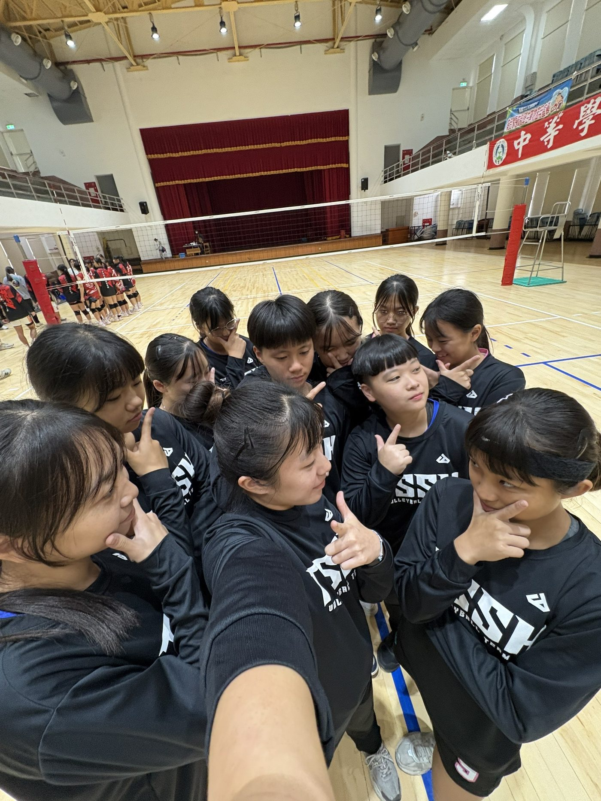
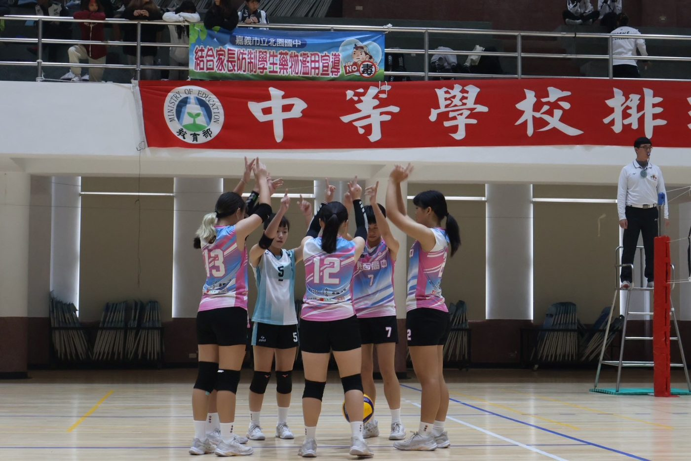
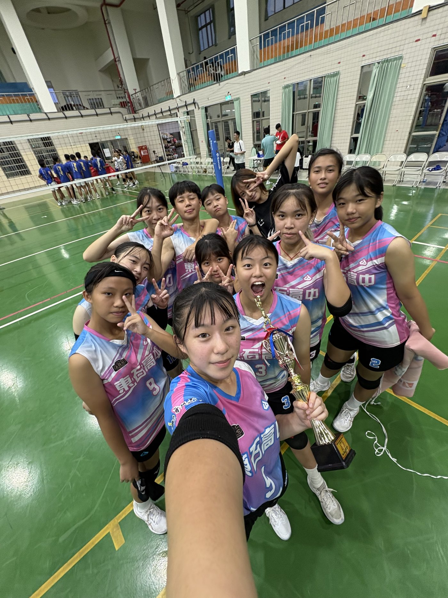

01我的故事
東石高中女排自112年成立，初期僅有6名高三學生組成，利用放學後與假日勤練，球員在專業教練的帶領與訓練下，積極參與各項全國性賽事，同時兼顧學業表現與品格培養。這不僅體現學校重視體育發展與學術教育並行的理念，也為學生提供在專業學習之外發掘潛力、培養自信與展現自我的機會。



東石高中女排自112年成立，初期僅有6名高三學生組成，利用放學後與假日勤練，球員在專業教練的帶領與訓練下，積極參與各項全國性賽事，同時兼顧學業表…
東石高中女排自112年成立，初期僅有6名高三學生組成，利用放學後與假日勤練，球員在專業教練的帶領與訓練下，積極參與各項全國性賽事，同時兼顧學業表現與品格培養。這不僅體現學校重視體育發展與學術教育並行的理念，也為學生提供在專業學習之外發掘潛力、培養自信與展現自我的機會。



歷屆成績 · 更新於 2026/04/20
訓練與參賽計畫
東石高中位於嘉義縣朴子市。是一所結合普通高中與職業類科的綜合型高級中學。學校鄰近沿海地區，環境純樸，校園寬敞，致力於提供學生多元發展的學習環境。東石高中秉持「全人教育、適性發展」的教育理念，除了重視學科知識的培養，也強調品格教育、體育活動與實務能力的養成。
東石高中女排自112年成立，初期僅有6名高三學生組成，利用放學後與假日勤練，球員在專業教練的帶領與訓練下，積極參與各項全國性賽事，同時兼顧學業表現與品格培養。這不僅體現學校重視體育發展與學術教育並行的理念，也為學生提供在專業學習之外發掘潛力、培養自信與展現自我的機會。首次參加嘉義縣中小學運動會即奪冠，並在全國華宗盃拿下季軍；113年再獲嘉義縣排球區域對抗賽亞軍。如今球隊逐步壯大至十餘名成員，訓練持續紮實穩健，114年先後在全國和家盃及永信盃分別拿下第五與第八名，更於114年勇奪諸羅山盃全國冠軍，展現東高女排的堅韌與成長軌跡。
本計畫旨在為球隊學生打造一個資源穩定、後盾充足的成長環境，使其無須為經費問題分心，得以專注於學業與專項訓練的精進。在完善的支持系統下，學生不僅能持續提升競技實力與課業表現，更能在心理層面建立安全感與自我肯定。對學校而言，這不只是培養優秀運動選手，更是推動全人教育、均衡發展的重要實踐。
此外，企業或個人的參與贊助，將為球隊注入更完善的訓練設備與比賽資源，同時形塑互惠共榮的合作關係。企業品牌可透過球隊制服、賽事場地背板、活動文宣、社群媒體與校方公告等多元管道露出，在各級賽事與媒體報導中累積能見度。當球隊展現拚搏精神與團隊合作成果時，企業品牌也將與「努力、團結、堅持」等正向價值緊密連結，進一步提升社會好感與品牌形象。
更進一步，企業與學校可攜手規劃訓練營、校園體驗活動或社區公益賽事，讓品牌不僅停留在標誌曝光，更能實際參與教育現場與在地社群。透過與學生、家長及居民的互動交流，深化企業在地方的信任基礎與情感認同。此種合作模式，使企業在推動 ESG 與 CSR 理念的同時，也能真正回饋教育與體育發展，創造長遠而深具影響力的社會價值。
我們期盼透過本次合作，實現「讓學生安心逐夢，讓企業實踐責任」的雙贏願景，使體育成為串連教育、產業與社會的正向橋樑。
我想達到…
7~9月
訓練重點:
個人體能提升、個人基本動作加強、技戰術運用之觀念建立、團體隊形
訓練與默契的培養。
10~4月
訓練重點:
團隊隊形搭配統整與練習、增加模擬賽的訓練。
5~6月
訓練重點:
遊戲訓練取代傳統訓練、肌肉協調與柔軟訓練。
爆發力訓練：
箱跳（Box Jump）4組×6下
原地連續垂直跳 4 組×8下
助跑摸高跳 4 組×5 次（模擬扣球）
敏捷反應＋橫向移動：
敏捷梯（前後／側向）每動作 3 組
T 字跑4 組
5-10-5 折返跑4 組
教練口令反應移動6回合×30秒
耐力訓練：
長跑5K
間歇跑
接發球專項：
發球機（或跳發）接發強調腳步移動與站位溝通
扣球技術：
定點舉球扣直線、扣斜線與變線控制
攔網技術：
原地起跳攔網
橫向移動攔網
兩人雙人攔網配合
發球策略：
破壞性發球（攻擊弱點）
發球後立即回防
目標：發球成功率 90%
防守串聯：
防守後組織反攻
攔網：
兩人雙人攔網配合
攔網策略配合防守佔位
需求項目與數量（依官方頁面）
| 選手營養費 | NT$ 480,000 |
| 運動防護費 | NT$ 100,000 |
| 訓練器材裝備費 | NT$ 100,000 |
| 參賽報名費 | NT$ 24,000 |
| 選手零用金 | NT$ 480,000 |
| 參賽旅運費 | NT$ 240,000 |
| 經費需求合計 | NT$ 1,424,000 |
| 比賽球衣 | 30套 |
| 團體長褲、外套 | 15套 |
標示「不公開」者為官方頁面未揭露之欄位。
網路公開搜尋結果，均附原始出處
國立東石高中體育組的Facebook粉專，為校內體育事務官方頁面；未明確提及排球隊。
出處：https://www.facebook.com/TSSHSPORT/國立東石高級中學的學校Facebook粉專，可追蹤校內活動；頁面未特別標示排球隊內容。
出處：https://www.facebook.com/p/%E5%9C%8B%E7%AB%8B%E6%9D%B1%E7%9F%B3%E9%AB%98%E7%B4%9A%E4%B8%AD%E5%AD%B8-100063728365783/申請者於體育署捐贈媒合平臺自填的相關連結。
出處：https://www.instagram.com/tssh.volleyball?utm_source=ig_web_button_share_sheet&igsh=ZDNlZDc0MzIxNw==台灣體大女排團隊到東石高中指導排球訓練，貼文並記錄東高女排永信盃闖進八強。
出處：https://www.facebook.com/tssh.cyc/posts/1464585962353876/東石高中女子排球隊在114年諸羅山盃全國排球錦標賽奪高中女子組冠軍。
出處：https://www.facebook.com/tssh.cyc/posts/1235504835261991/台灣時報報導東石高中女排在諸羅山盃全國排球錦標賽奪冠。
出處：https://www.taiwantimes.com.tw/app-container/app-content/new/new-content-detail?blogId=blog-277089f2-a168-4411-a0eb-84003d72474d¤tCategory=101